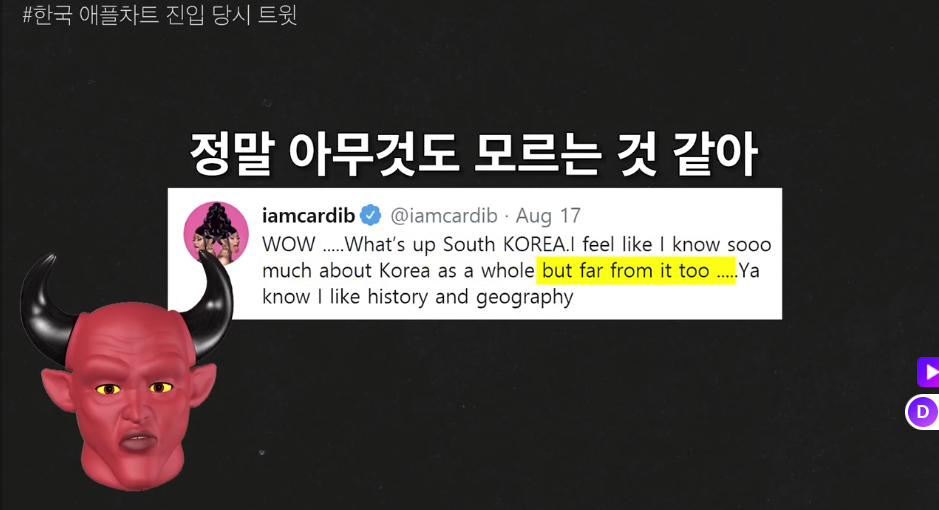

🟠 주황 통계 · 자막 · 효과음 한 페이지
아래의 기존 편집기를 직접 엽니다. 새 페이지·중복 렌더러를 만들지 않았습니다.
⭐ 기존에 만든 디자인 그대로 · 새 시안 생성 금지
아래는 기존 레퍼런스의 실제 이미지입니다. 클릭하면 동일한 기존 재질 렌더러와 브라우저에 저장한 해당 설정을 엽니다. 새 막대 모양으로 대체하지 않습니다.
⚡ 풀파티 · 기존 V8 시안 열기REF-17 · 티몬 몬소리 Black
 ✨ 금색 자막 · 원본REF-20
✨ 금색 자막 · 원본REF-20
✨ 금색 자막 · 원본REF-20

💬 댓글 · 기존 V8 시안REF-23 ⚔️ VS · 기존 V8 시안기존 디자인과 자산 사용풀파티 원래 규칙: 핵심어만 빨강, 흰 본문, 좌우 번개, 첫 줄 55%, 원본 표기 자간 -1px(미리보기 배율), 윤곽·그림자 없음. V8 실제 1920px 코드의 글자 52/95px, 자간 -2.5px, 하단 80px. 다른 해상도에서는 기준폭에 맞춰 환산.
흰 #FDFDFC강조 #E03C3E번개 #D94B50캡처 실측 #DC3E3F (참고)
라벨 스타일의 #E25254→#F26163은 별도 스타일이며 풀파티를 덮어쓰지 않습니다. 기존 자막 미리보기의 단순 그래프는 소리·움직임 예시이고, 실제 정교한 통계 디자인의 대체물이 아닙니다.
기존 자료를 불러오는 중. 실제 영상 렌더러 적용은 미검증입니다.
🔗 V9 규칙·55개 검색어 · 🔗 원본·색·폰트 · 🔗 YouTube 오디오 보관함
🔊 누락 음원 후보 13개 · 와/박수/팡/문자/통계
원본과 라이선스 표기를 확인한 후보입니다. 새 파일 다운로드·청취 검증은 미실행. 외부 플레이어를 하나씩 열며, 재생이 막히면 원본 링크에서 확인하세요. 아카이브·인터뷰 음성은 추가 권리 확인이 필요합니다.
선택 음원은 다운로드 후 아래 기존 편집기의 ‘내 음원’에 넣어 조합 비교. 기존 MP3 16개 보존.
💀 디자인이 영상에 안 먹히는 이유 · 검수 지시
재질과 자막은 별개 코드입니다. 기존 자막 강조색·박스는 CSS 고정값이었고 색·그림자는 저장 설정에 없었습니다. 이번에 미리보기와 내보내기 값을 연결합니다. 실제 Ubuntu MP4 렌더러는 별도 검수입니다.
연하의 레퍼런스 · MATERIAL STUDY 01
원본의 색, 빛, 깊이를
함께 맞춥니다.
원본을 크게 비교하고, 색상 칩을 눌러 바꿔 보세요. 유리의 얇은 반사선부터 지도 높이·종이 여백까지 각각 살펴봅니다.
12비교 유형02AI 재질 시안3화면 비율
REF-05
파란 유리 6단
설정은 이 브라우저에 자동 저장됩니다. JSON 파일로 다른 컴퓨터에 옮길 수 있습니다.
🌸 REVISION 02 · 2026.11.25
말씀하신 차이를 이렇게 수정했습니다
🌸🌸🌸🌸🌸 다음 작업에 복사할 UI 지시
🌸🌸🌸🌸🌸 미리보기는 화면에 고정하고, 설정·전환·효과음은 오른쪽 접이식 패널 안에서만 독립 스크롤되게 해주세요. 어떤 효과를 눌러도 같은 화면에서 즉시 재생 결과가 보여야 하며, 태블릿·모바일에서는 미리보기와 설정이 서로 가리지 않게 배치하고 실제 클릭으로 검증해주세요.
REFERENCE BREAKDOWN
분석 문서 ↗작은 여백부터, 재질을 만드는 순서까지
원본 관찰픽셀 실측🌸 재현 제안스크린샷에서 광원·재질의 원래 설정값을 역산할 수는 없습니다. 구현값은 따로 표시합니다.
🌸 6겹 재질 공식 · 어떤 색을 기준으로 고르나요?
큰 면의 중간색을 먼저 고른 뒤, 모서리의 깊은 색과 빛이 닿는 반사색을 따로 맞춥니다. 원문 HEX, 화면 픽셀 실측, 아래 재현 제안은 서로 구분합니다.
01 중간 면화면에서 가장 넓은 면의 기준색
02 안쪽 깊이두꺼운 가장자리·겹침의 짙은 색
03 방향별 변화위→아래 · 좌→우 · 대각선의 색 지점
04 곡면 반사광위쪽과 왼쪽의 넓은 흰빛, 국소 하이라이트
05 얇은 림유리 테두리의 밝고 어두운 미세 선
06 두 그림자넓은 투영 그림자 + 좁은 접촉 그림자
🌸 밝은 색을 덧씌우는 위치·농도·번짐은 원본 장면의 3D 설정값이 아닌 눈에 보이는 결과를 맞추기 위한 재현값입니다. 각 그래디언트의 HEX·위치·농도는 아래 레시피와 JSON에 기록했습니다.
옆의 메모와 그림자는 어떤 이름인가요? · 5가지 용어
- 콜아웃 Callout
- 특정 단계 옆에 띄운 설명 카드입니다.
- 리더 라인 Leader line
- 설명 카드와 대상의 점을 연결하는 선입니다.
- 주석 Annotation
- 숫자·단위·특징을 덧붙이는 설명 전체를 말합니다.
- 투영 그림자 Cast shadow
- 빛의 반대 방향으로 바닥이나 벽에 드리우는 그림자입니다.
- 접촉 그림자 Contact shadow
- 물체가 닿거나 겹치는 틈에 생기는 짙고 좁은 그림자입니다.
레이어를 쌓는 순서
그라데이션 레시피
구도 · 작은 간격
원본 좌표·실측 색·가로/세로 배치 수치 전체
GENERATED MATERIAL STUDIES
사용자 원본과 별도 보관🌸 이번에 생성한 재질 시안
유리의 광택과 흰 지도 모형의 깊이를 확인하는 이미지입니다. 아래 이미지는 위쪽 편집기의 개별 레이어가 합쳐진 결과와는 별개입니다.


NEXT EDIT
선택한 설정 그대로 전달하기
위에서 색과 여백을 맞춘 후 현재 설정 프롬프트 복사를 누르세요. 레퍼런스 주소, 색 역할, 그라데이션 지점, 여백, 화면 비율과 적용 순서가 함께 들어갑니다.
🌸 지도·종이처럼 원본 이미지가 포함된 시안은 이미지 안의 각 부분을 독립적으로 다시 칠하지 않습니다. 편집 가능한 항목만 표시합니다. 완성 MP4 수정은 실제 편집 프로젝트에서 이어집니다.